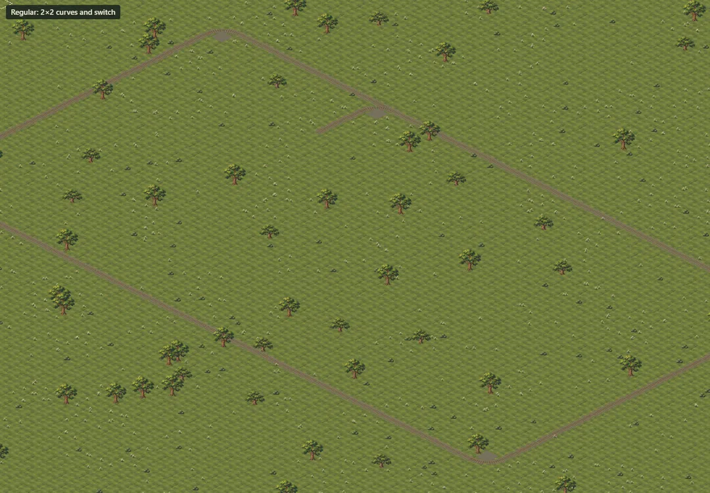
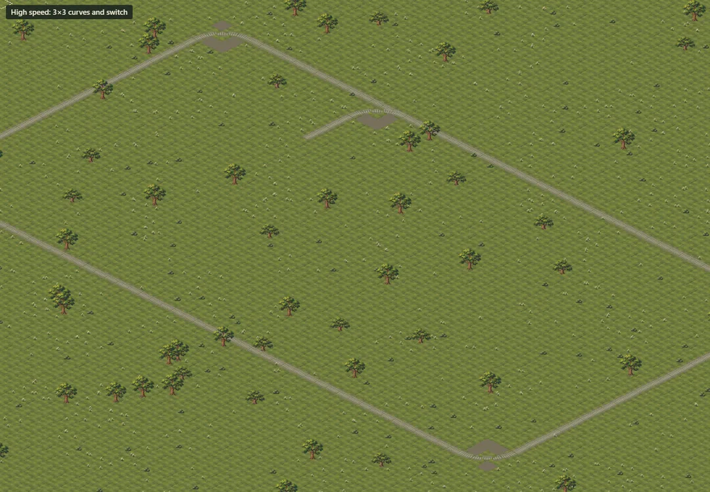

Your question: what should high-speed track give once regular curves are 2×2? Here are both
curve sizes in the game: regular curves and switches at 2×2 (radius 1.5), high-speed ones at 3×3
(radius 2.5). Seven trains, with locomotives of 1 to 6 tiles and wagons of 1, 2 and 3 tiles, run
through the same corner on each. Each animation shows the same train at the same moments on both
curves.
The bodies are the game's own drawn stand-ins (only the Mk48 has a rendered sprite on main).
They are sized to the new scale: the F7 is 3 tiles, the 9F and DDA40X 4, the Big Boy 5, and a
6-tile stand-in plays the Koutetsujou. Compare the geometry, not the paint.
For this test every train may use either curve, so the long ones show what happens when they
are let through. Nothing here is in the game yet; it is a throwaway branch.
"Off the rail" is how far the body strays from the rails at its worst point in the curve, in
tiles.
The two loops

2×2 curves and switch: the new regular track

3×3 curves and switch: high speed if it gets wider curves
Seven trains through the corner
What the numbers say
Train
Body
Off the rail, 2×2
Off the rail, 3×3
Up to 3 tiles, and every steam engine with a tender up to 5 tiles, stays within 0.3 tile of the
rails on 2×2. A tender engine bends in two places, so each part is short.
Long rigid bodies are the problem: the 4-tile diesel with three trucks and the 6-tile body cut
straight across the 2×2 corner, half a tile to a full tile inside it, with their trucks out on
the rails beside them.
3×3 reduces that by about a third (0.34 and 0.67) but does not fix it. Its three gravel aprons also
make every corner heavier.
Recommendation
Line speed only; long rigid bodies get their own fix
Keep both regular and high-speed curves at 2×2, and give high speed the line speed: regular track
caps top speed, high-speed track lifts it. Wider curves buy little, cost space and would not make the
longest bodies look right anyway. Those bodies need a fix in the size work: for example, bodies of 4
tiles and up are drawn in two hinged halves, like the tender engines, so they bend along the curve.
Answer in the chat: line speed only, wider curves, or both.